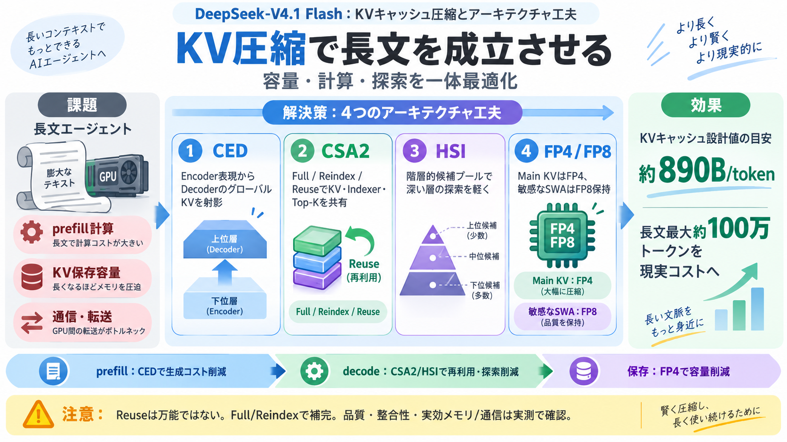

prefill / 計算
入力全体を再処理しやすい

長い文脈（最大約100万トークン）で動かすために、KVキャッシュのフットプリントを「構造的に削る」ことを軸にした設計です。
狙い：prefill / 保存 / 通信 を支配するボトルネックを、モデルアーキテクチャ（CED・CSA2・HSI）とキャッシュ設計（再利用モード・FP4・精度分割）で同時に圧縮します。
長文エージェントでは tool call が繰り返され、prefill（全入力の一括処理）とKV保存が頻発して、計算・容量・通信が限界に当たりやすくなります。
Flashは、層ごとに同じ種類のKVを作り直さないようにし、再利用（reuse）と再索引（reindex）をモードで切り替えて圧縮します。
※ここでの890Bは設計値に近い指標として扱うのが安全、とFAQで注意されています。
CED（Causal Encoder-Decoder）により、長文prefillで必要な層の計算量を減らし、Decoderが毎回グローバルKVを作らないようにします。
Bounded Replay（有効範囲の近傍依存を近似として制御）により、計算削減と整合性のトレードオフを調整する方向性が示されています。
CSA2は、Main KVだけでなくIndexer K（疎注意の候補探索に必要）やTop-K indicesまで、層をまたいで再利用することで節約します。
チャネル次元／シーケンス次元／層次元の圧縮方向を“掛け算的に”最適化し、KV保存量とインデクサ計算の両方を抑える狙いです。
HSI（Hierarchical Sparse Indexer）で、候補探索領域を階層化して深い層のインデクシング負荷を抑え、探索コストの文脈長依存を弱めます。
学習時と推論時で候補制限が一致しないと危険になり得るため、ポストトレーニング段階で反映する必要がある、という趣旨が述べられています。
単なる量子化ではなく、Main KVをFP4として格納しつつ、SWA（ある種の表現共有の仕組み）側は精度劣化に敏感なためFP8を残すなど、精度戦略を分けます。
RoPEやSWAの“敏感さ”に応じて、量子化タイミングや形式を運用する姿勢が示されています。
Flashの工夫は、prefillの計算削減（CED）と、decode中の再利用・候補探索削減（CSA2/HSI）に分かれて効きます。
さらにFP4 Main KVで保存容量そのものを縮め、通信やオフロード戦略にも効く前提です。
Flashは、圧縮の対象をKVの“容量”だけでなく、生成（計算）と検索（インデクサ/Top-K）まで分解して最適化します。
ReuseでMain KVやTop-K indicesを凍結すると到達可能な表現範囲が制限され得るため、Full/Reindexを混ぜて不足を補う設計です。
「何を読むか（アドレス）・内容（辞書）・方向（クエリ）」を分ける発想が要点です。
入力データ抜粋では学習手続きや損失の詳細が伏せられており、HSI/CEDの整合性がどれほど厳密か、また890B/tokenが実効メモリに直結するかは別途検証が必要です。
結論：方向性は有望だが、実測（品質と総メモリ/通信）で評価を固める必要があります。
DeepSeek-V4.1 Flashは、CED・CSA2・HSI・FP4の設計を“別々”ではなく協調させ、長文エージェントを現実コストで動かす方向性を提示しています。
用語（日英）：KVキャッシュ（Key/Value Cache）、prefill（前処理/全入力処理）、decode（逐次生成）、Top-K（上位K候補）、疎注意（Sparse Attention：全体ではなく候補のみ注意）。
No references found